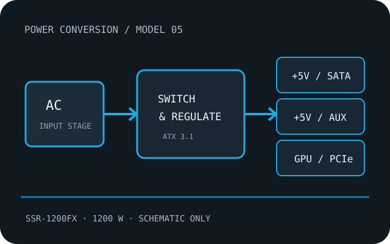

[ ATX DESKTOP POWER // IDENTIFIED MODEL ]
Seasonic VERTEX GX-1200
The VERTEX GX 1200 W Gold ATX 3.1 variant, product code SSR-1200FX. It is distinct from the catalog’s VERTEX GX-1000 and GX-850 models. Specifications below are manufacturer-source references; the physical unit’s nameplate and matching manual control.

HIGH-VOLTAGE SAFETY: Disconnect AC before external inspection. Never open, probe, or repair a PSU internally; hazardous charge can persist after unplugging. Replace a damaged, wet, burnt, modified or unidentified unit, or use qualified service.
Model-specific specifications
| Manufacturer / exact model | Seasonic VERTEX GX-1200; model / SKU SSR-1200FX. Match the complete regional suffix, hardware revision and label. |
|---|---|
| Rated capacity | 1200 W continuous total output as the manufacturer-rated class; combined rail limits and operating-temperature derating remain model-specific. |
| Efficiency certification | 80 PLUS Gold, listed by the manufacturer for this named model. Certification does not identify an unknown PSU revision or establish used-unit condition. |
| AC input | 100–240 V AC, 50–60 Hz; use the unit label for current and regional mains rating. |
| DC rails | +12 V: 100 A (1200 W); +3.3 V: 25 A; +5 V: 25 A (125 W combined); −12 V: 0.3 A; +5 VSB: 3 A. |
| Connector set | 24-pin ATX; two EPS/CPU 4+4-pin; one native 12V-2x6 16-pin; three PCIe 6+2-pin; 16 SATA plus two SATA 3.3; three peripheral 4-pin. |
| ATX / PCIe revision | ATX 3.1 / PCIe 5.1 revision of VERTEX GX; not the original ATX 3.0 cable revision. |
| Mechanical envelope | 170 × 150 × 86 mm (depth × width × height). Verify mounting holes, fan/grille clearance, cable exit/side-panel clearance and tolerance against the case drawing. |
| Protections | OPP, OVP, UVP, SCP, OCP and OTP. Protection labels do not guarantee a safe outcome under a fault; use only a healthy, unmodified unit within its documented ratings. |
Compatibility & revision caveats
- Check the complete SSR-1200FX model code; earlier-generation VERTEX GX cables and 12VHPWR/12V-2x6 wiring should not be presumed compatible. Respect cable bend/clearance guidance and case length.
- Confirm motherboard 24-pin and EPS count/pinout, GPU cable type, total power, rail limits, chassis dimensions, cooling clearance, region and full model suffix before purchase or installation.
- Modular PSU-side pinouts are not standardized. A cable that physically fits is not evidence of electrical compatibility; use only leads explicitly approved for this exact model/revision.
- ATX, ATX12V and PCIe connector revisions describe interfaces, not quality, safety certification or automatic compatibility with every PC component.
Manufacturer product and manual sources
- Seasonic VERTEX GX-1200 product pageSeasonic model listing; regional page availability may vary.
- Seasonic VERTEX GX data sheet (PDF)Manufacturer’s VERTEX GX data sheet; match the 1200 W row and revision to SSR-1200FX.
When a broad product-family page conflicts with a model-specific manual, label or cable table, the exact unit label and corresponding model documentation take precedence.